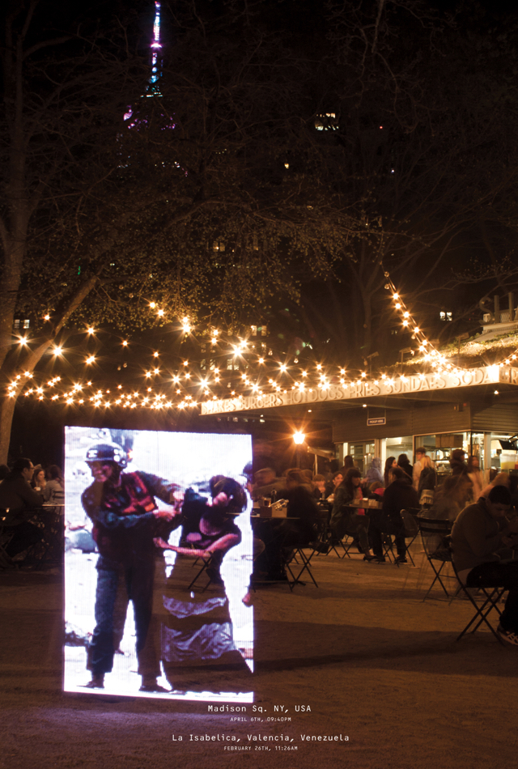
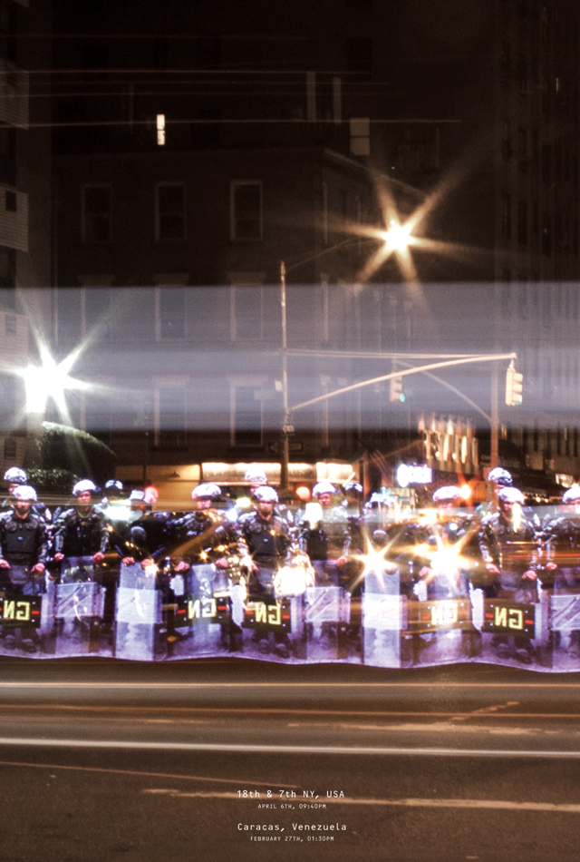
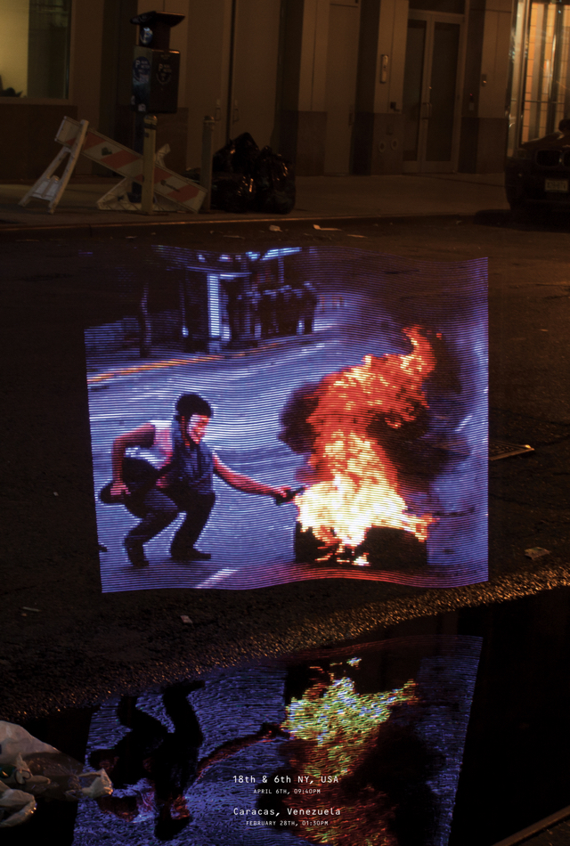
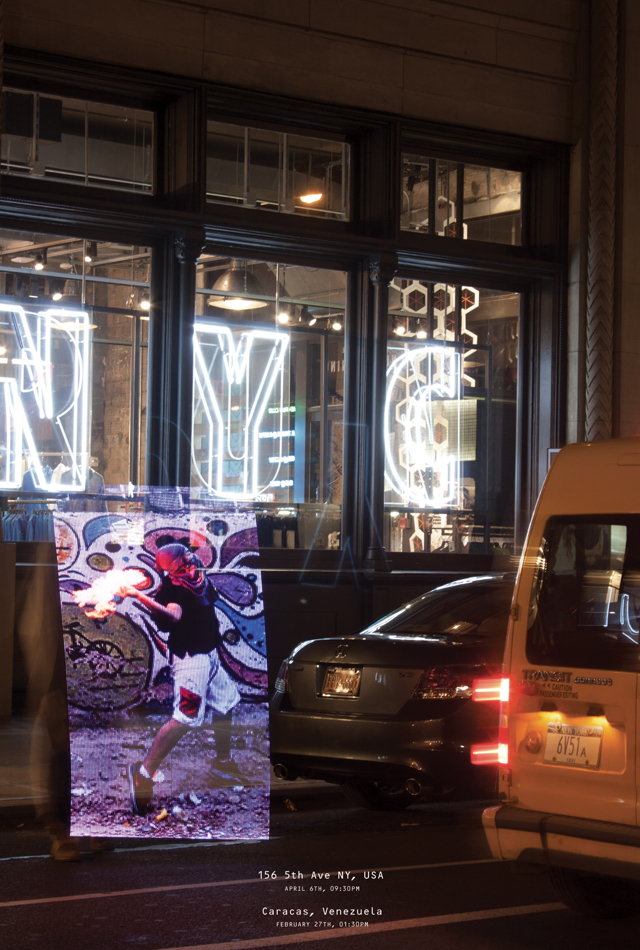
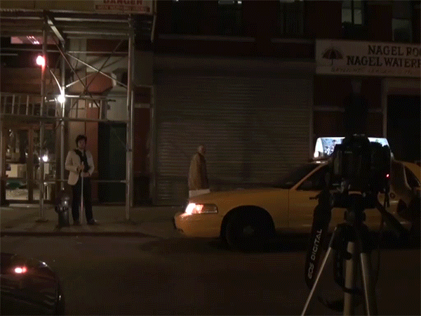
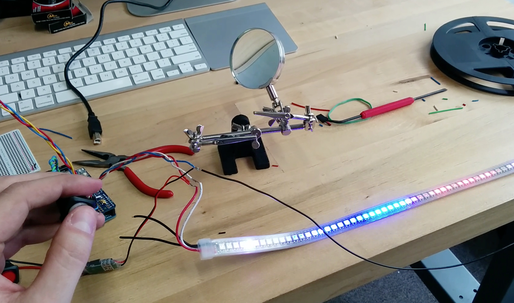
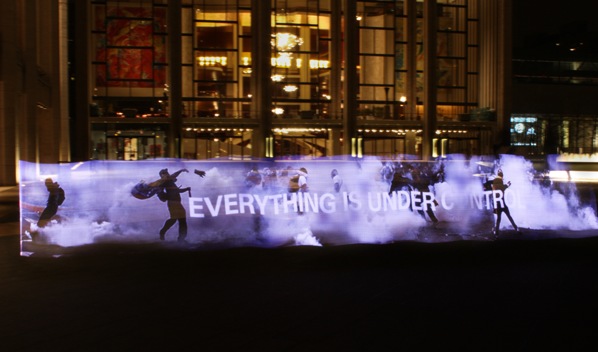

Design & Technology hacked together for a cause


In 2014-15, Venezuela was submerged in chaos. Protests and abuses of power were rampant throughout the streets of my hometown. The only fleeting record was on social media channels.
How could I make a transitory poster that emulated the fleeting nature of the information coming from Venezuela?
What kind of poster is the result of a real-time stream of information?


Transporting the issues form Caracas to New York comes across simply and directly. The images are shocking and unpleasant, but at the same time they have an appeal that cannot be denied.

Designers cannot wait for technology to come to us, we must actively seek it out.
We owe it to ourselves to deconstruct our tools and to constantly question the state of our practice.

For this project, methodologies from hardware prototyping, electronics and agile software development were used to create the custom LED lighting rig necessary to produce the images in mid-air.
